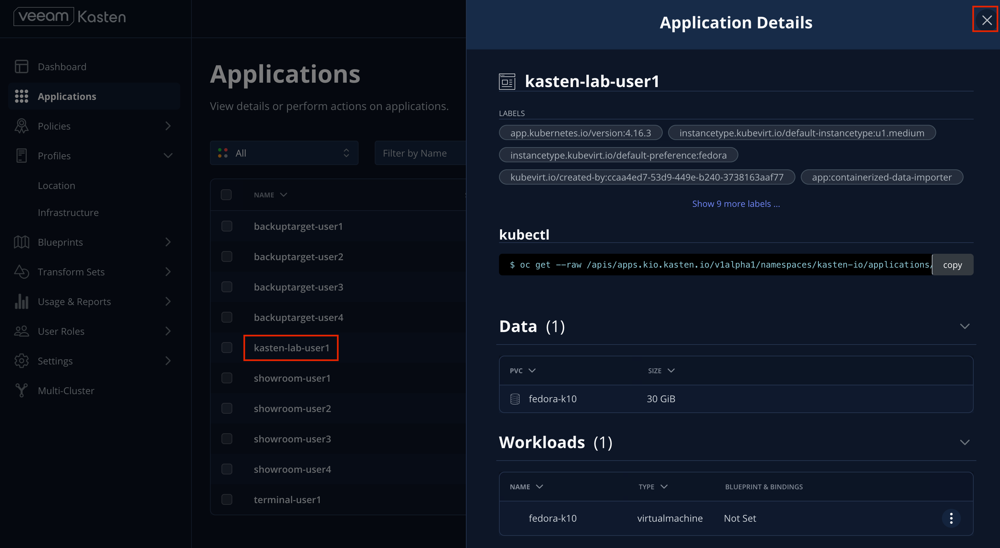
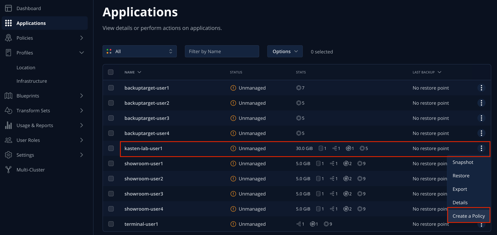
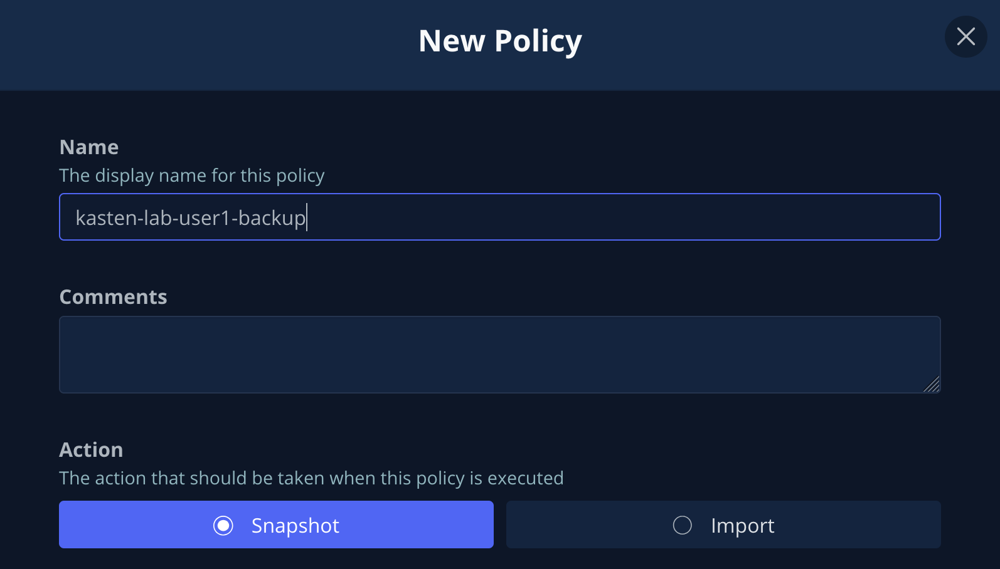
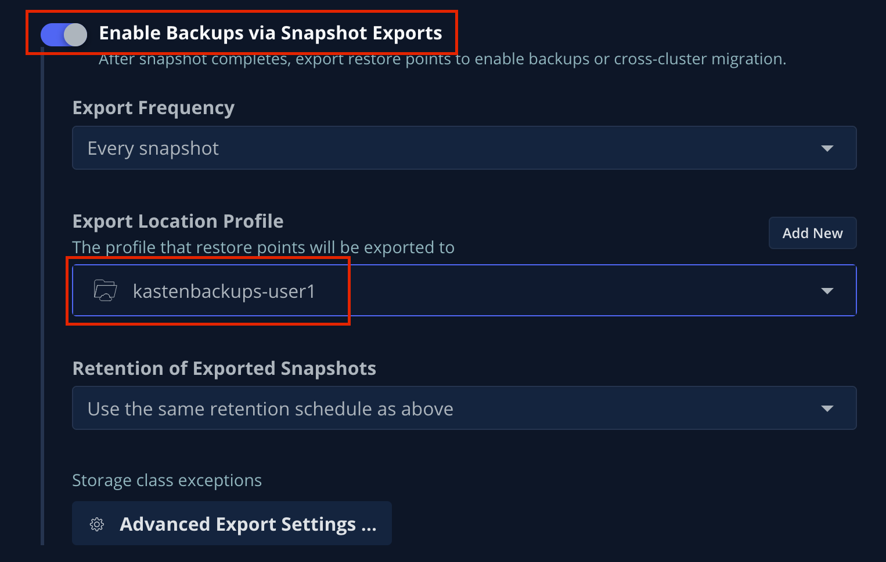

Lab 2 - Configure Veeam Kasten
| If you have already configured an S3-compatible object store for Kasten and created a location profile in the previous Module, you can skip to 4. Creating a Kasten Policy using the Location Profile you created previously. |
1. Configure an S3-compatible Object Store for Backup
Out of the box, Kasten provides everything required to perform a local snapshot of a Kubernetes application (It does require k10.kasten.io/is-snapshot-class: "true" is set on the VolumeSnapshotClass, which has already been done when the lab was provisioned) - but snapshots are not backup! In order to restore in the event the local cluster or primary storage is compromised, a copy of that data should be exported to another location.
The configuration of these backup targets are called Location Profiles. Kasten supports several options, including:
-
AWS S3
-
Azure Blob
-
Google Cloud Storage
-
S3-Compatible
-
NFS
-
Veeam Backup & Recovery
Kasten supports the creation of immutable backups to ensure that, as a last line of defense against ransomware, backup data cannot be manipulated or deleted by any user. These backups are supported on the following platforms:
-
AWS S3
-
S3-Compatible with Object Lock support (ex. Ceph, MinIO, Wasabi, etc.)
-
Azure Blob
-
Google Cloud Storage
In this exercise, you will configure a bucket using the on-cluster Ceph Object Gateway deployment and add the bucket as a Location Profile in Kasten.
| In a real world environment you should never back up data to the same infrastructure you are intending to protect - using on-cluster storage as a backup target is performed in the lab solely to simplify lab staging and instructions. |
2. Configuring an Object Bucket Claim to Store Backups
| Kasten supports immutable object storage and it is recommended to protect backups against accidental deletion or ransomware attack. For this lab, we won’t configure immutability as it requires elevated permissions. |
-
If you haven’t yet logged into the OpenShift console log into the console now.
-
Your UserID is
user1with passwordredhat.
-
-
Open an OpenShift command line terminal
-
An
ObjectBucketClaimhas already been created for you. You can examine the claim using the following command:oc describe objectbucketclaim -n backuptarget-user1 kastenbackups-user1 -
Run the following command to retrieve the Access Key for the bucket:
oc get secret -n backuptarget-user1 kastenbackups-user1 \ -o jsonpath='{.data.AWS_ACCESS_KEY_ID}' | base64 --decode && echoCopy the Access Key to a text editor as it will be needed again shortly
-
Run the following command to retrieve the Secret Key for the bucket:
oc get secret -n backuptarget-user1 kastenbackups-user1 \ -o jsonpath='{.data.AWS_SECRET_ACCESS_KEY}' | base64 --decode && echoCopy the Secret Key to a text editor as it will be needed again shortly.
3. Creating an S3-Compatible Location Profile
-
In the Kasten Dashboard, select Profiles → Location from the sidebar and click + Add New.

-
Fill out the following fields and click Next:
Location Profile Name
kastenbackups-user1Storage Provider
S3 Compatible
-
Fill out the following fields but DO NOT click Next yet!:
S3 Access Key
Paste
ACCESS KEYvalueS3 Secret
Paste
SECRET KEYvalueEndpoint
bucket.example.comSkip certificate chain and hostname verification
CheckedRegion
us-east-1Bucket
kastenbackups-user1 -
Click Next followed by Submit to create the Location Profile.
You should expect your
kastenbackups-user1Location Profile to appear with a Success status.Now you’re ready to start protecting apps!
-
Click the … menu and select View YAML to view the manifest generated by creating a Location Profile through the Dashboard.
As you can see from this example, Kasten Location Profiles can be created declaratively as a
profile.config.kio.kasten.ioobject referencing a Secret to store access and secret keys. This Kubernetes-native implementation makes it simple to configure backup targets using a GitOps approach.See docs.kasten.io for complete documentation on defining Profile API objects. -
Click Cancel or the X in the upper-right to close the YAML window.
4. Creating a Kasten Policy
-
In the Kasten Dashboard, select Applications to view all discovered namespaces.

Your
kasten-lab-user1-pacmanapplication should appear as Unmanaged, indicating it is not being protected by any policy.You will notice that you don’t see any namespaces starting with openshiftin the list of applications.Namespaces, including the
openshift-...system namespaces can be excluded from the Applications list (and compliance reporting) by adding a list ofexcludedAppsto the K10 Operandspec, as shown:
The following command can be used to produce a properly formatted list of namespaces beginning with
openshiftthat can be copy/paste into the K10 Operand YAML tab:oc get ns --no-headers=true | \ awk 'BEGIN { print " excludedApps:" } /^openshift/{print " -",$1}'Your lab environment has already been configured to exclude system namespaces.
-
Click
kasten-lab-user1-pacmanin the Applications list to view details about the workloads and additional resources discovered within the namespace. -
Close the Application Details window.
-
Under
kasten-lab-user1-pacman, select … → Create a Policy. -
Leave the defaults for Name and Action.
Policy Presets provide the option of allowing administrators to define SLA-focused configurations to simplify self-service data protection for other users. -
Leave the default Hourly Backup Frequency and Snapshot Retention values.

-
Toggling Advanced Frequency Options allows users to specify what time hourly snapshots occur, how many snapshots to take per hour, and which snapshots should be used for daily, weekly, monthly, and yearly promotion.
-
Toggling Backup Window allows users to specify during what times is Kasten allowed to run the policy.
-
Enabling Use Staggering can intelligently distribute when to start policies during the specified window such that the desired frequency is maintained, but with the least amount of policies running simultaneously, allowing Kasten to reduce the peak load on the cluster.
-
These settings should be left unselected for this lab.
-
-
Toggle Enable Backups via Snapshot Exports and select
kastenbackups-user1as the Export Location Profile.By default, Kasten will export all data associated with the snapshot to ensure you have a durable, off-cluster copy. However, there are circumstances where you may only want to export references to the snapshot, such as migrating a workload in AWS from one availability zone to another. This ability to only export snapshot metadata can dramatically improve performance in these specific instances. This can be configured under Advanced Export Settings. -
Under Select Applications, verify the
kasten-lab-user1-pacmannamespace has been selected.
Targeting application(s) based on namespace is generally the most straightforward method of defining a backup policy. However, Kasten also allows you to identify applications based on native Kubernetes labels. This is especially helpful if you have many VMs in a single namespace and only want to protect current and future VMs with a specific label on the VirtualMachineresource, such asbackup: goldorvm: prod.Kasten also provides rich filtering capabilities to include or exclude resources based on Kubernetes API Group, API Version, Resource Type, Resource Name, and Labels. For example, you could exclude backup for Secrets resources where a label includes an indication that the secret is externally managed.
-
Leave the remaining settings as default.
When performing many tasks within the Kasten UI, you can press the </> YAML button to expose the native Kubernetes YAML that defines the resource created through the UI. This can be useful for familiarizing yourself with the Kubernetes-native APIs defined by Kasten and for extracting snippets for use in GitOps or Infrastructure-as-Code tools. -
Click Create Policy.